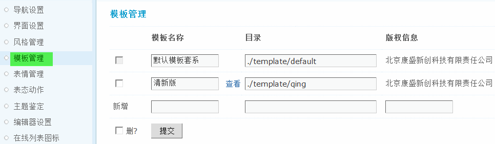
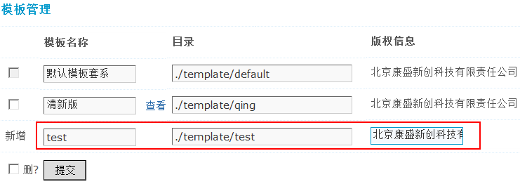
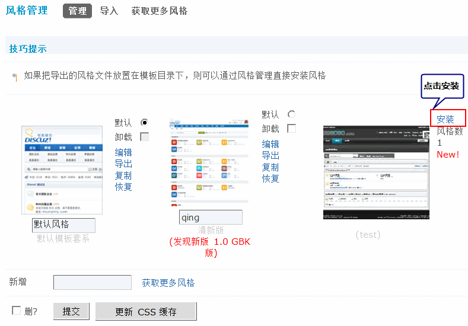
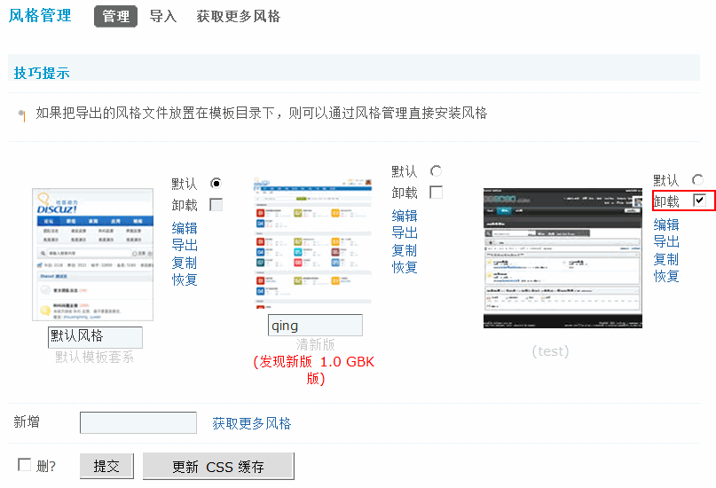
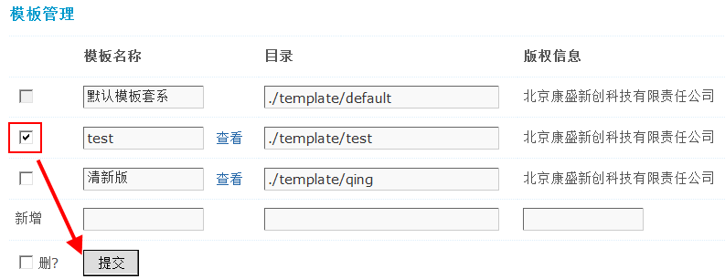

模板管理
通过模板管理，可以对模板套系进行管理，比如添加或者删除，可以在线编辑模板文件。
操作路径：【后台】=>【界面】=>【模板管理】
一、添加模板
1、把要添加的模板的文件上传至 template 文件夹下，如templateq553。
2、在“新增”后面的文本框中，输入模板名称，目录及版权信息，然后点击提交即可，如下图所示：
说明：新增时必须确保目录存在，否则将无法完成新增。也就是说，当您需要新增一套模板套系的时候，需要现在 templates 目录下新建相应的目录。
您可以修改模板名称、目录等信息，也可以新增一套模板套系。
3、添加成功后，可以进入【后台】=>【界面】=>【风格管理】，点击安装，如下图所示：
二、删除模板
勾选要删除的风格卸载复选框，然后点击提交即可删除该风格，如下图所示：
同时要到模板管理中把新增的模板删除，如下：
同时还要删除template 文件夹下对应的模板目录。